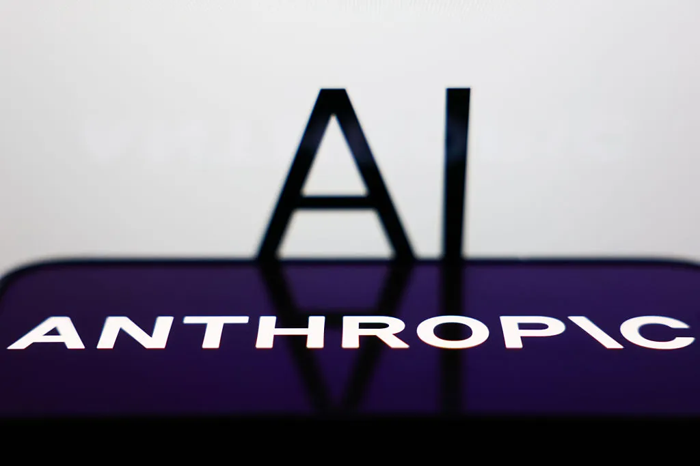

18 октября Anthropic официально сообщила о создании Anthropic Public Benefit Fund — полностью принадлежащей компании LLC, которой передаётся 5% акций (после одобрения акционерами). Структура «растёт вместе с бизнесом»: совет директоров может добавлять по 2% каждые 50% роста стоимости компании сверх базовой отметки. В официальном анонсе подчёркнуто: акции фонда нельзя тратить на лоббизм и политические пожертвования — ни в США, ни за рубежом.
Anthropic и так работает как публичная benefit-корпорация: исследования по безопасности ИИ, биомедицина, скидки на Claude для НКО и научных организаций. Но фонд, по словам компании, даёт «гибкость и масштаб» для новых форм — вплоть до крупных пожертвований классическим НКО или прямых выплат отдельным группам людей. Первый намеченный direction — последствия ИИ для рынка труда: ранее Anthropic уже выделила $200 млн на исследование этого вопроса, теперь же признаёт, что «учитывая темп прогресса ИИ, могут понадобиться более смелые подходы».
Объявление сделано накануне возможного IPO (в сентябре Anthropic раскрыла проспект размещения) и на фоне падения общественного доверия к ИИ-индустрии: глава компании Дарио Амодей называл нынешний негатив «кризисом доверия». Компания также напоминает: при основании сооснователи обещали отдать 80% своих долей, а сотрудники могут передавать акции с поддержкой компании — в итоге, по оценке Anthropic, около 20% её акций так или иначе будут работать на общественное благо. Детали управления фондом обещают раскрыть в ближайшие месяцы.